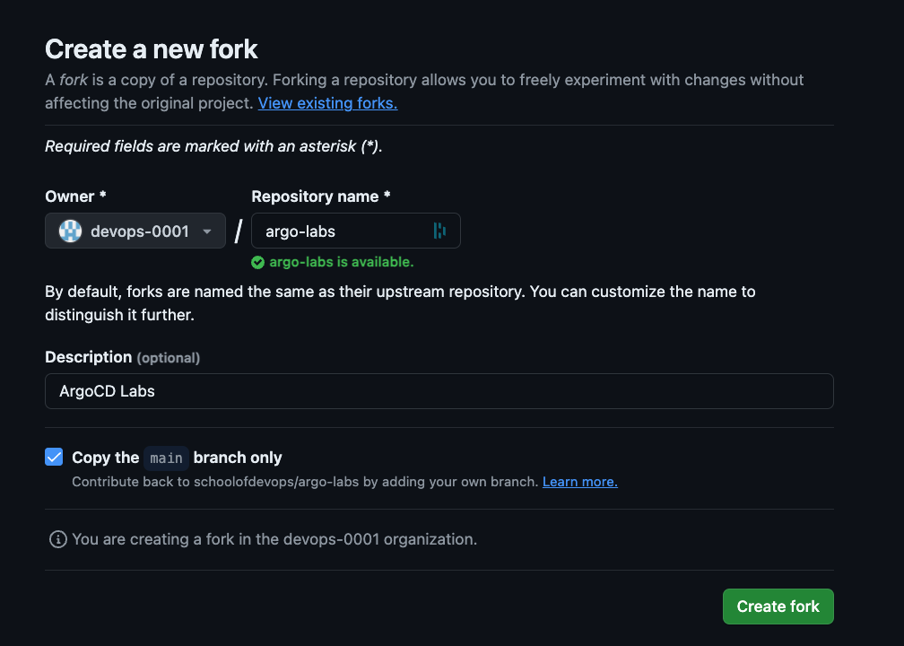
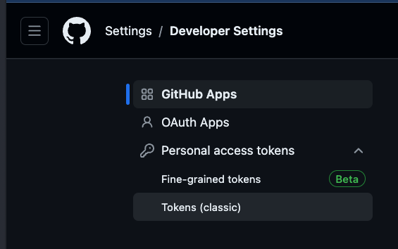
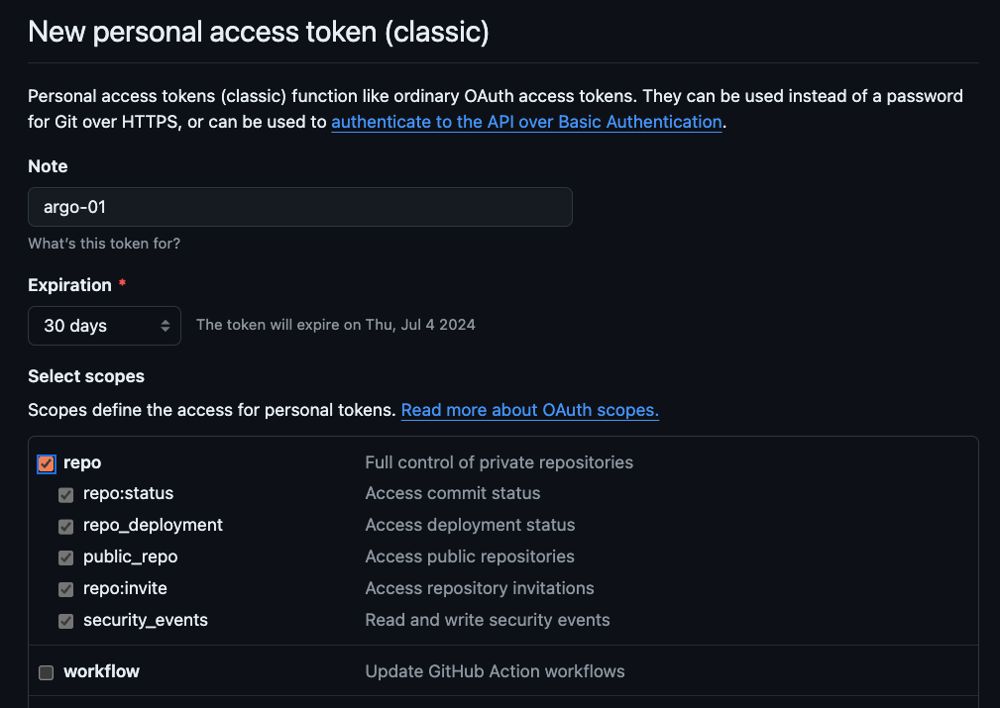

Blue Green Releases with Argo Rollouts
Author: Gourav Shah
Publisher: School of Devops
Version : v2024.06.03.01
Launch Vote App with Deployment
Lets begin by first deploying the vote service with the deployment code available.
- Create a fork of Kubernetes Deployment Code for Vote App

Review the code created with kustomization overlay configured for staging environment in additional to the base manifests.
Create namespaces for staging environments as,
kubectl create ns staging
kubectl get ns
kubectl config set-context --current --namespace=staging
validate
kubectl config get-contexts
[sample output]
CURRENT NAME CLUSTER AUTHINFO NAMESPACE
* kind-kind kind-kind kind-kind staging
Now clone the forked repo and switch to it
git clone https://github.com/xxxx/argo-labs.git
replace xxxx with your user name
change it to argo-labs and examine the code for base as well as staging as
cd argo-labs
kustomize build base
kustomize build staging
then deploy vote service to staging as
kubectl apply -k staging
where, -k option applies the kustomization spec.
validate
kubectl get all
You should see the deployment and service for vote app. And you should be able to access the staging deployment with nodeport 30000.
Install Argo Rollouts
Install Argo Rollouts Controller and CRDs with ,
kubectl create namespace argo-rollouts
kubectl apply -n argo-rollouts -f https://github.com/argoproj/argo-rollouts/releases/latest/download/install.yaml
Validate with,
kubectl api-resources | grep -i argo
Optionally, you could install argo plugin for kubectl
On linux
cd ~
curl -LO https://github.com/argoproj/argo-rollouts/releases/latest/download/kubectl-argo-rollouts-linux-amd64
chmod +x ./kubectl-argo-rollouts-linux-amd64
sudo mv ./kubectl-argo-rollouts-linux-amd64 /usr/local/bin/kubectl-argo-rollouts
On Mac.
curl -LO https://github.com/argoproj/argo-rollouts/releases/latest/download/kubectl-argo-rollouts-darwin-amd64
chmod +x ./kubectl-argo-rollouts-darwin-amd64
sudo mv ./kubectl-argo-rollouts-darwin-amd64 /usr/local/bin/kubectl-argo-rollouts
And validate as,
kubectl argo rollouts version
Also install Kustomize by following the instructions in official documentation here.
Create a Preview Service
Create a preview service during blue-green analysis
File: base/preview-service.yaml
---
apiVersion: v1
kind: Service
metadata:
name: vote-preview
labels:
role: vote
spec:
selector:
app: vote
ports:
- port: 80
targetPort: 80
protocol: TCP
nodePort: 30100
type: NodePort
Update base/kustomization.yaml with the following
apiVersion: kustomize.config.k8s.io/v1beta1
kind: Kustomization
resources:
- deployment.yaml
- service.yaml
- preview-service.yaml
Create rollout along with preview service with
kubectl apply -k staging
Validate
kubectl get all
kubectl describe svc vote
kubectl describe svc vote-preview
Both services should be pointing to the same set of pods.
Migrate Deployment to Argo Rollout
From argo-labs/base , create a copy of existing deployment spec as,
git mv deployment.yaml rollout.yaml
also update kustomization.yaml to replace deployment.yaml with rollout.yaml
apiVersion: kustomize.config.k8s.io/v1beta1
kind: Kustomization
resources:
- rollout.yaml
- service.yaml
- preview-service.yaml
Now edit base/rollout.yaml to add Blue/Green Release spec as per the documentation here.
Update the following properties
- apiVersion:
argoproj.io/v1alpha1 - kind:
Rollout - replicas:
4
Remove spec.template.metadata.name if present.
Replace the strategy with blue green as,
strategy:
blueGreen:
autoPromotionEnabled: true
autoPromotionSeconds: 30
activeService: vote
previewService: vote-preview
Also update argo-labs/staging/kustomization.yaml to remove the following
file: staging/kustomization.yaml
replicas:
- count: 2
name: vote
Delete the deployment
kubectl delete deploy vote
And then create the rollout from argo-labs path as,
kubectl apply -k staging
Validate
kubectl get ro,all
kubectl describe ro vote
Deploy a Blue/Green Release
Open a new terminal and start watching with
watch kubectl get ro,all --show-labels
Also open two more terminal windows to watch for vote and vote-preview services respectively as
watch kubectl describe svc vote
watch kubectl describe svc vote-preview
If you had installed the argo rollout plugin for kubectl, you could also launch the Rollout UI with
kubectl argo rollouts dashboard -p 3100
and then start watching for the rollout using http://localhost:3100/rollouts. Replace localhost with actul IP address of the host if you are running kubectl on a remote host.
Now, trigger a rollout by updating the image by updating the image tag in base/rollout.yaml
spec:
containers:
- image: schoolofdevops/vote:v2
and then by applying it as
kubectl apply -k staging
In the same terminal you could watch the status of the rollout with,
kubectl argo rollouts status vote
You could also watch the status using Argo Rollouts Dashboard as

You would notice that,
- A new replica set is created with new version
- Service
vote-bg(Preview service) starts pointing to the new version, while the active servicevotestill pointing to previous version - After all pods with new version are ready, it will pause for about 30 seconds as configured in the rollout configuration.
- Once the wait interval is over, active service starts pointing to the new version pods created with the newly launched replica set. This is where there maybe just a blip of a nominal downtime.
- Eventually the replicase with older version will scale down to zero, completing the rollout.
You could try rolling out (by updating the image version) a few times to learn how it works.
Publish Changes to Repo
Scale down the staging replicas so that you could accommodate more replicas created for prod environment, which will be yet another namespace in the same cluster.
edit base/rollout.yaml and set the replicas count to 1
spec:
replicas: 1
also in the same file, set the image tag back to v1
spec:
containers:
- image: schoolofdevops/vote:v1
apply
kubectl apply -k staging/
validate
kubectl get all
Before committing the changes, make sure you have created a GitHub Access Token with repo access. To do so,
- Login to GiHub
- Click on your User Profile on top right
- From
Settings->Developer Settings->Personal access tokens->Tokens(classic)
 - Select
Generate new token(classic), provide authentication as needed and proceed to create token. - From token creation page, provide a token name and select
repoconfigurations
 - Generate Token and copy it somewhere safe. You will need this token multiple times throughout this course to be added as kubernetes secret, so keep it handy.
Commit all the changes that you have made so far to the repo
git status
git add base/*.yaml
git status
git commit -am "updated staging deployment code with blue green release"
git push origin main
Cleaning Up
Once you are done with it, clean up the environment with
kubectl delete -k staging/